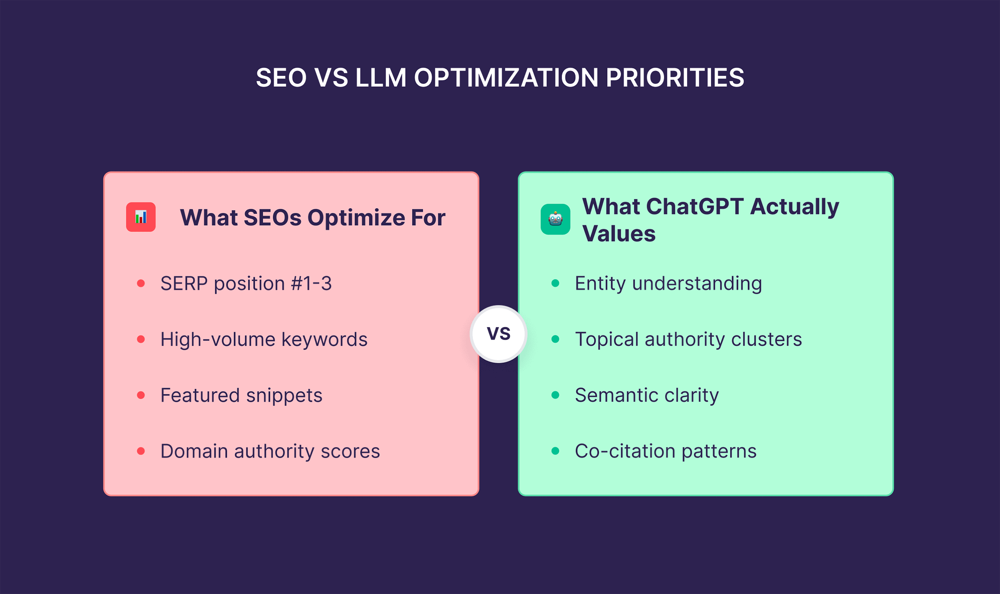

一、核心结论：让AI引用文章，先把文章改成答案源
一篇文章能否被AI频繁引用，关键不在于写得多长、观点多新，甚至不完全取决于传统SEO排名，而在于它是否能被AI稳定理解、拆解、验证和复用。
普通文章往往以表达为中心，强调铺垫、叙述和完整阅读体验。AI引用更看重的是答案结构：标题是否明确，首段是否有结论，H2是否可抽取，定义是否稳定，证据是否可信，FAQ是否覆盖真实问题。
因此，文章改写的本质不是文字润色，而是把原文从“给人读的文章”升级为“给AI调用的知识结构”。这也是GEO内容优化最核心的动作之一。
二、第一步：重写标题，让搜索意图足够明确

标题是AI判断页面主题的第一层信号。一个模糊标题会让模型难以判断文章回答什么问题，也会降低检索系统召回概率。
面向AI引用的标题，应尽量包含明确对象、明确问题和明确结果。例如“内容优化的方法”过于宽泛，而“一篇文章怎么改，才能被AI频繁引用”就清楚得多。它告诉模型：这篇文章讨论文章改写，目标是AI引用，形式是方法论。
标题不要为了吸引点击而牺牲语义清晰度。AI搜索时代，标题首先是主题标签，其次才是传播包装。
三、第二步：首段300字内必须给出可引用结论
很多文章开头喜欢铺背景，但AI更偏好快速识别核心结论。首段如果没有明确答案，模型就需要从后文自行总结，引用稳定性会下降。
建议首段包含三件事：第一，直接回答标题问题；第二，解释为什么这个问题重要；第三，给出文章的方法框架。这样AI在快速扫描页面时，就能判断文章是否适合进入答案生成链路。
例如可以这样写：让AI频繁引用文章，不是靠增加篇幅，而是把文章改成结构清晰、证据充分、句子可摘取的答案源。这样的句子可以直接被模型复用。
可引用首段的三个标准
第一，有明确主语和判断；第二，不依赖前文才能理解；第三，能回答一个真实搜索问题。只要首段满足这三个标准，文章被AI识别为答案候选的概率就会明显提升。
四、第三步：重构H2，让每个小节承担一个知识任务
H2不是排版工具，而是文章的知识骨架。AI会借助标题层级判断内容结构，因此H2必须清楚表达每个部分的功能。
推荐把H2设计成可抽取的问题或判断，例如“为什么AI不引用普通长文”“如何改写首段”“证据链如何影响引用”。不要使用过于文学化或情绪化的小标题，因为它们很难提供稳定语义信号。
一个好的H2应该让读者和模型在不读正文的情况下，也能理解文章的逻辑路径。H2越清楚，页面越容易被拆成可引用知识单元。
| 改写对象 | 常见问题 | 推荐做法 |
|---|---|---|
| 标题 | 吸引点击但语义模糊 | 写清对象、问题和目标 |
| 首段 | 背景过长，没有结论 | 300字内给出核心判断 |
| H2 | 小标题文学化 | 每个H2承担一个知识任务 |
| 正文 | 段落松散 | 拆成定义、机制、步骤和证据 |
| FAQ | 答案太短 | 100到200字解释边界 |
五、第四步：补充定义句，让AI知道你在定义什么
AI引用内容时，非常依赖稳定的定义句。所谓定义句，就是用一句话说明一个概念是什么、解决什么问题、和什么不同。
很多文章不缺观点，但缺少定义。它们反复描述某个现象，却没有给出稳定表述。模型在使用这类内容时，需要自己归纳概念，容易产生偏差，也不容易直接引用原文。
改写文章时，每个核心概念都应该至少有一句定义句。例如：“面向AI引用的文章改写，是把普通文章重构为可检索、可理解、可验证、可摘取的答案源。”这类句子越稳定，越容易成为AI答案中的引用材料。
六、第五步：增加证据链，让模型敢于引用
AI不是只寻找表达漂亮的内容，它还会判断内容是否可信。没有证据支撑的判断，即使写得清楚，也更容易被模型视为普通观点。
证据链可以包括官方文档、研究论文、平台指南、案例数据、第三方报道和可验证事实。不同文章不一定都需要复杂数据，但至少要说明判断依据来自哪里。
在改写时，应把证据放在相关结论附近，而不是集中堆在文末。这样模型在抽取某个判断时，也能同时看到支撑材料。证据越接近结论，引用稳定性越高。
七、第六步：把长段落拆成可摘取的知识单元
普通长段落对人类阅读可能流畅，但对AI抽取并不友好。一个段落如果同时包含背景、观点、案例和建议，模型很难判断哪一句可以单独引用。
改写时，可以把段落拆成四类知识单元：定义单元、机制单元、步骤单元和判断单元。定义单元回答“是什么”，机制单元回答“为什么”，步骤单元回答“怎么做”，判断单元回答“什么时候适用”。
这种拆分会让文章看起来更清楚，也会让AI更容易把内容映射到用户问题。文章不是越碎越好，而是每个单元都要有明确语义任务。
八、第七步：补FAQ和内部链接，形成可持续引用网络
一篇文章如果只有正文，AI可以理解它；但如果同时有FAQ和内部链接，AI更容易把它放进站点知识系统中理解。
FAQ负责回答高频问题，内部链接负责连接相关主题。例如一篇讲文章改写的内容，可以链接到FAQ结构、Schema、AI搜索排名机制和知识单元设计等主题。这样模型不仅理解单页，还能理解站点的实体关系。
这一步的目标，是让文章从孤立内容变成知识网络中的节点。被引用的不是单篇文章本身，而是它背后的结构完整性。
九、结论：AI频繁引用来自结构稳定，而不是表达用力
一篇文章想被AI频繁引用，不能只靠写得更长、更热闹或更像营销稿。真正重要的是让文章具备清晰标题、直接结论、稳定定义、结构化H2、可信证据、可摘取段落和完整FAQ。
这些改写动作共同解决一个问题：让AI更容易判断这篇文章能回答什么、哪些句子可以引用、引用后是否可靠。
GEO内容优化的终点，不是制造更多文章，而是把每一篇文章都改造成可被AI理解和调用的答案源。
参考文献
- Google Search Central：Creating helpful, reliable, people-first contenthttps://developers.google.com/search/docs/fundamentals/creating-helpful-content
- Google Search Central：SEO Starter Guidehttps://developers.google.com/search/docs/fundamentals/seo-starter-guide
- Google Search Central：AI features and your websitehttps://developers.google.com/search/docs/appearance/ai-features
- Microsoft Learn：RAG and Generative AI in Azure AI Searchhttps://learn.microsoft.com/en-us/azure/search/retrieval-augmented-generation-overview
- Lewis et al., 2020：Retrieval-Augmented Generation for Knowledge-Intensive NLP Taskshttps://arxiv.org/abs/2005.11401
FAQ
Q1：旧文章真的需要为AI引用重新改写吗？
很多旧文章对人类读者仍然有价值，但不一定适合AI抽取。它们常见问题是首段没有结论、H2结构不清、定义句缺失、证据离结论太远。改写不是推翻原文，而是把已有内容整理成更清晰的答案结构，让模型更容易判断它能回答什么问题。
Q2：文章改写后一定会被AI引用吗？
不能保证一定被引用，因为AI引用还受检索系统、竞争来源、模型策略和用户问题影响。但结构化改写可以提高进入候选答案的概率。它让文章更容易被召回、理解和验证，也减少模型改写时产生偏差的可能，是GEO中最值得优先做的基础动作。
Q3：首段为什么这么重要？
首段是模型快速判断页面主题和答案价值的重要区域。如果首段只铺背景、不回答标题问题，模型需要继续向下寻找结论，抽取成本会变高。一个好的首段应该在300字内说明核心结论、适用对象和文章结构，让用户和AI都能迅速判断页面价值。
Q4：是不是文章越长越容易被AI引用？
长度不是核心变量，结构才是。长文章如果没有清晰H2、定义句和证据链，反而会增加语义噪声。短文章如果结构非常明确，也可能被AI引用。更好的做法是让长文由多个知识单元组成，每个部分都能独立回答一个问题，而不是把信息堆在一起。
Q5：可引用句应该怎么写？
可引用句要有完整主语、明确判断和稳定术语，尽量减少上下文依赖。例如不要写“这就是关键原因”，而要写“AI引用内容的关键，是页面是否能提供清晰、可信、可独立抽取的答案片段”。这样的句子更容易被模型直接放进生成式回答。
Q6：参考来源应该放在哪里？
文章末尾可以保留统一参考文献，但关键证据最好出现在相关结论附近。AI在处理内容时，会根据上下文判断某个观点是否有支撑。如果证据离结论太远，模型可能无法把两者稳定关联起来。最好的方式是结论、解释和来源形成局部闭环。
Q7：FAQ对文章被AI引用有什么作用？
FAQ可以把文章中的核心问题重新压缩成问答结构，帮助AI把页面映射到真实用户提问。很多用户在AI搜索中使用自然语言问题，而FAQ正好提供对应答案。只要FAQ问题选得准、答案写得完整，它就能成为正文之外的第二套可引用结构。
Q8：如何判断一篇文章改写是否成功？
可以从三个维度判断：第一，AI是否能准确概括文章核心结论；第二，AI回答相关问题时是否复用文章中的定义和判断；第三，不同模型对文章主题的理解是否趋于一致。如果这些信号改善，说明文章已经从普通内容接近答案源。